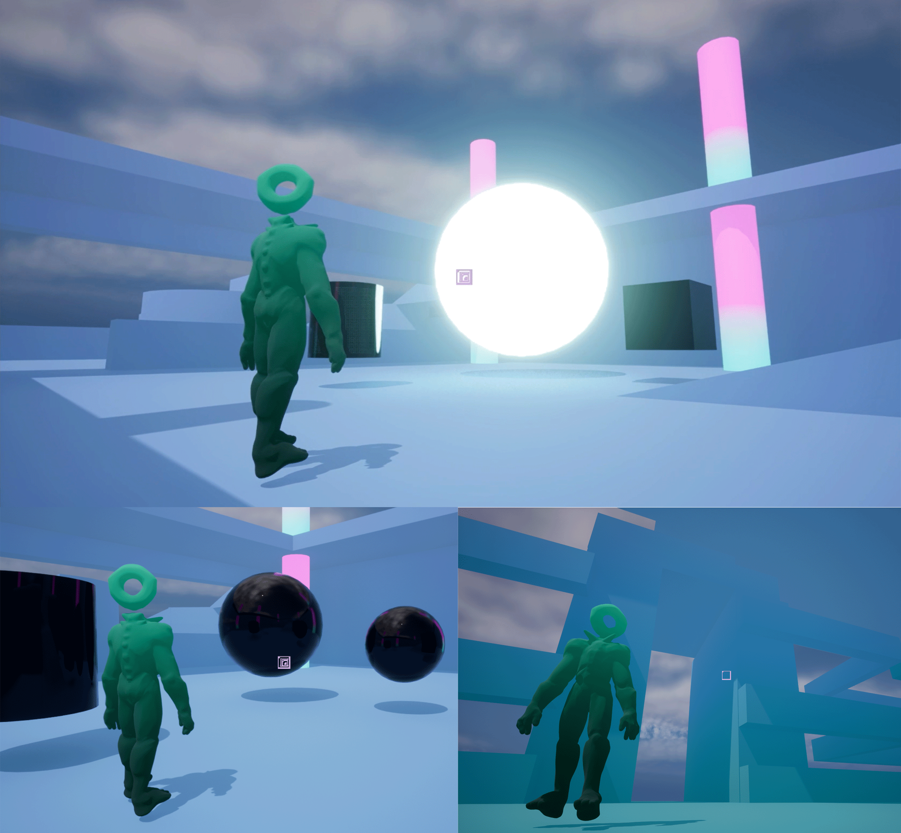

About this project:
Proto-Glod is a third-person narrative-fabulative action playground game. The player steps into the shoes of a 5 to 7 year old child in a library, who can change any one object into any other by storing an imprint of the object in a magical book, then targeting another object in the environment. It's all fun and games until you use your powers on a human. Reality-based hijinks ensue, and mystic-cosmic shenanigans emerge out of the chaos. The kid learns that they are a demigod of indeterminacy; conduit of primordial chaos, god(dess) of non-deterministic fate from Mesoamerican mythology: Tezcatlipoca.
Follow up on Proto-Glod's development on GitHub:
- By checking out my commit history.
- Reading my process journal entries (newest at the bottom).
- And my thoughts on why I do the things I do.
About this piece: Visual style exploration through shader development.
Implementation:

Follow up on Proto-Glod's development on GitHub:
- By checking out my commit history.
- Reading my process journal entries (newest at the bottom).
- And my thoughts on why I do the things I do.
About this piece: Workflow chart mapping the steps and iteration intervention points in UE5's Metahuman framework. This represents the state of my ongoing investigation and experimentation with the framework and peripheral DCC techniques.
About this piece: Gameplay and level design explorations in-engine, and character conceptualization sketching and art production process.
